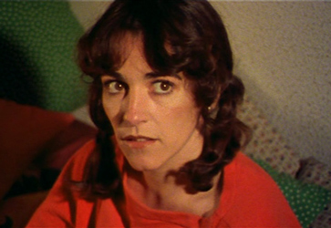
Carmen Maura - Pepi
Eva Siva - Luci (Luciana)
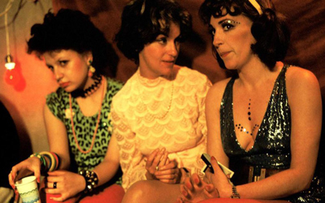
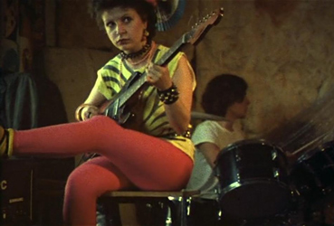
Alaska - Bom
Kiti Mánver - "The girl who is a model and a singer but not a whore"
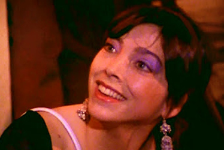
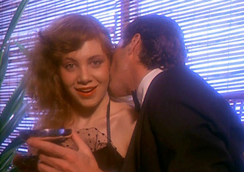
Cecilia Roth - Girl from the 'Ponte Panties' advert
Julieta Serrano - Woman dressed as Scarlet O'Hara
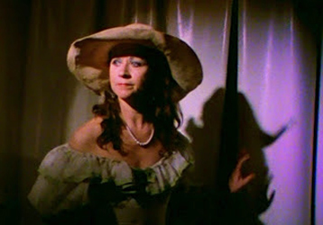
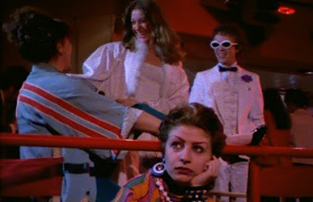
Assumpta Serna - Nuria (non-speaking cameo role)
Policeman / His twin brother
Charito, Luci's neighbour
Representative
Voice of the 'Ponte Panties' advert
Agustin Almodóvar - Man in the audience
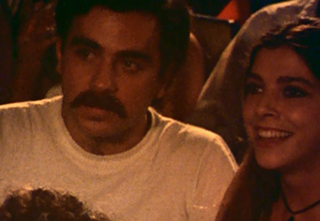
Pepi, a young independent woman living in Madrid, is filling up her Superman sticker album when she receives an unexpected visit from a neighbor policeman who has spotted her marijuana plants whilst spying on her via binoculars from across the street. Pepi tries to buy his silence with an offer of oral sex, but instead the policeman rapes her. This ruins her hopes of selling her virginity for a good amount of money. Thirsty for revenge, Pepi arranges for her friend Bom, a teenage punk singer, and her band, Bomitoni (Bom and Toni) and also a pun of Vomitoni (big puke), to beat up the policeman. Wearing Madrilenian costumes and singing a zarzuela, Pepi's friends give the man a merciless beating one night. However, the next day Pepi realises that they had attacked the policeman's innocent twin brother by mistake.
Undaunted, Pepi decides on a more complex form of revenge. She befriends the policeman's docile wife, Luci, from Murcia, with the excuse of receiving knitting lessons. Pepi's idea is to corrupt Luci and take her away from the wife-beating policeman. During the first knitting class, Pepi's friend, Bom, arrives at the apartment heading for the restroom in order to pee. This leads to the suggestion that, since Luci feels hot, Bom should stand on a chair and urinate over Luci's face. Bom's aggressive behavior satisfies Luci's masochism and the two women become lovers. Back home, Luci has an argument with her husband in which she complains about what he had done to Pepi. When he threatens to whip and kick her out, with a renewed sense of liberation Luci leaves her husband and her home, moving in with Bom.
The three friends, Pepi, Luci and Bom are immersed in Madrid's youth scene, attending parties, clubs, concerts and meeting outrageous characters. In one of the concerts, Bom sings with her band, the Bomitonis, a song called Murciana marrana (i.e. the slut from Murcia). Luci becomes a proud groupie. The highlight of one of the parties is a penis size contest called General Erections, a competition looking for the biggest, most svelte, most inordinate penis. The winner receives the opportunity to do what he wants, how he wants, with whomever he wants. He selects Luci to give him oral sex, which makes her the most envied woman at the party.
Eventually Pepi is forced to find work as her father decides to stop her income. She becomes a creative writer for advertising spots designing ads for sweating, menstruating dolls and multi-purpose panties that absorb urine and can double as a dildo. Pepi also begins to write a script which will be the story of lesbian lovers Luci and Bom. The chauvinist policeman is desperately looking for his wife. Meanwhile, he takes advantage of naive neighbour Charito, who is in love with Juan, his twin brother. Pretending to be Juan, the policeman slaps, then sexually assaults Charito.
Finally, the policeman finds Luci coming out of a disco and kidnaps her from her two friends. He gives Luci a terrible beating that sends her to the hospital, where Pepi and Bom visit her. They quickly realise that they have lost Luci. She has decided to return to the person who mistreats her best - her sadistic and tyrannical husband. His brutality is what Luci has always wanted or became accustomed to. Bruised and bandaged in her hospital bed, Luci tells Bom she is returning to him for a life of abuse. Bom is lost without Luci and laments that pop is also out of fashion. Pepi has the solution to both problems. Bom should move in with Pepi as her bodyguard and start singing boleros.
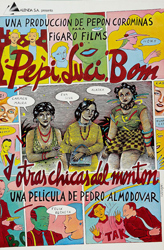
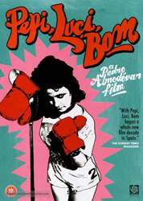
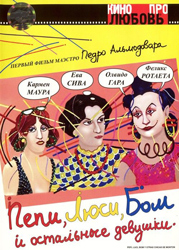
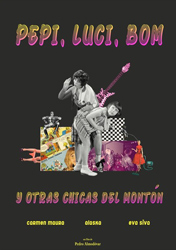
Alfred Hitchcock (1960) - A number of Bernard Herrmann's music cues are heard in the film.
Nell Campbell
Alaska y Los Pegamoides
Enrico Petrella
Maleni Castro
Pascual Marquina
Billy Vaughn
Grains of Sand